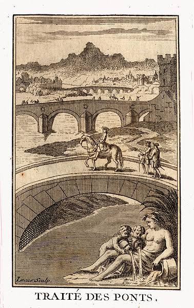
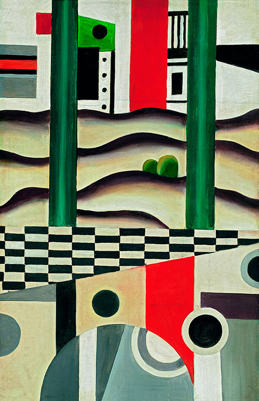

A Museo del Prado az elmúlt években kiállítási útvonalak kialakításán dolgozott, amelyek nagy lehetőséget kínálnak kulturális kínálatának sokszínűbbé és szélesebbé tételére. Emellett lehetővé teszik a kiállított művek új szempontú értelmezését, valamint lehetőséget teremtenek a kutatásra és az ismeretterjesztésre multidiszciplináris megközelítésben.
Ennek jegyében 2026 októberében a Prado gyűjteményeinek új megközelítése mutatkozik be: egy olyan tematikus útvonal, amely mintegy 30, a Villanueva épület egészében elhelyezett műalkotáson keresztül mutatja be a múzeum gyűjteményeiben megjelenő polgári mérnöki alkotásokat, például a hidakat.
Ez a megközelítés a Fundación FHECOR közreműködésével valósul meg. Az alapítvány feladatai közé tartozik többek között a formatervezés és a szerkezeti mérnöki tudományok területén folyó kiegészítő és szakirányú képzés, valamint az ezekhez kapcsolódó történelmi és kulturális értékek támogatása, ösztönzése és népszerűsítése.
26/10/2026 - 21/2/2027

